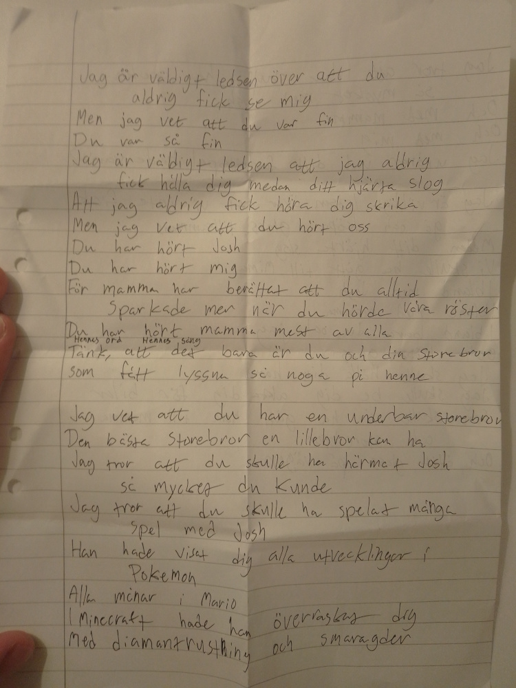
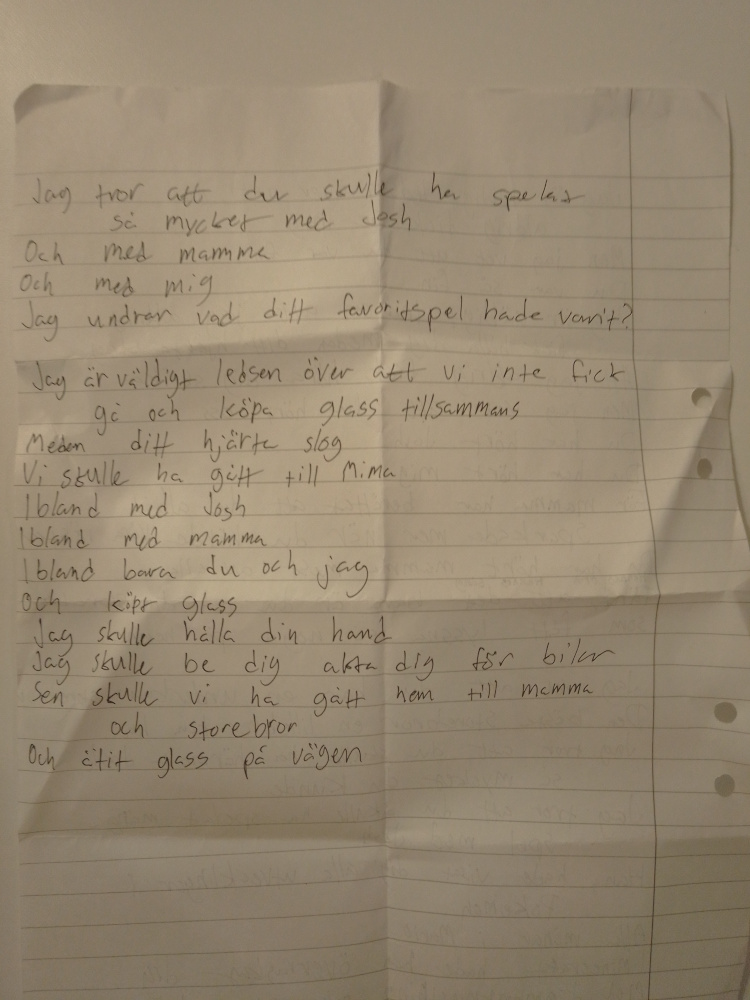

This post has been hard for me to get to. But I feel that I want to get it out, for multiple reasons. First of all, I want to be able to keep writing personal blog posts, but it feels like I'm skipping over something important if I don't write about this. Secondly, I want as many as possible to know about my son Casey. He has an older brother, who can talk for himself (right now he wants to be a streamer). But Casey can't talk, so I figure I'll have to talk for him.
My son Casey was supposed to be born mid august. Actually the same day that his brother would start school. Instead, he was very eager to join us. A bit too eager.
We had traveled to Stockholm, the day before my mom's birthday, to give her a surprise celebration. That went well, we had a really nice dinner at great vegan place Hermans.
Then me, my pregnant wife (with yet unnamed Casey included) and Casey's brother went to our hotel, and slept well.
I suddenly wake up, in the middle of the night, to hear my wife swearing. I find her in the bathroom with the floor covered in blood. We call an ambulance, try to pass the time by talking, all while Casey's brother is sleeping soundly in his bed.
An hour later, the ambulance comes, drives my wife away while I have to get Casey's brother to his grandma. Then I drive to where I think my wife is, and manage to find her joking with the nurses, doctors and midwives. Everything seems fine. Casey has a good pulse, and my wife is all right. They couldn't quite figure out what happened. Turns out that it's hard to debug problems inside another person's body. Especially when that person has another person in it, a very sensitive person which don't do too well with prodding and regular diagnostic tools.
I don't feel like writing about the whole hospital visit right now, but I can summarize it by saying that during 10 days we:
After a while, everything seemed fine. 10 days had passed with sort-of relatively minor hiccups. Now-named Casey's pulse was generally stable (as stable as a person-in-person's pulse can be, apparantly it fluctuates a lot even when everything is going well). I bought some board games and played them with my wife. Everything was so calm it was decided that I go home with Casey's brother, who hasn't been able to be much with us during all this time. He has never been away so much from us before.
I go home with Casey's brother, and it's nice to finally be back home. I take him to preschool, and relax and work a bit during the day. I think I talk to my wife on the phone, and everything is calm. Evening comes, I put Casey's brother to bed, and stay up a bit and work. I'm very proud over my new, portable computer set up, which has an elevated stand for my laptop, under which I can have a small keyboard and a trackball.
Then, I think between 21:00-22:00, my wife calls. Apparently they haven't seen Casey's pulse in a while. That's not alarming in itself. During the whole visit, there has been a lot of trouble finding Casey's pulse with the CTG-machine (the machine that tracks his pulse). Still though, it takes so long that we decide that I should come to the hospital. I call my friend/neighbour to come over (and Casey's grandpa to take over, but he lives a bit further away), and as soon as I saw my friend, I went to the car. I called my wife and we talk. While driving, the doctors decide that they have to do a emergency c-section. The worry on her otherwise extremely calm voice rings through as the hangs up. I drive legally at first, but when I come out on the essentially empty highway, I turn up the speed.
Earlier during our visit, we got to see what would happen in case Casey would be born too early. Apparently hand hygiene is extremely important. So when I finally get to the hospital, and the nurse tells me that my wife's still in surgery, and that I should come with her. I ask her how my wife and Casey are doing, but the nurse says she doesn't know. I ask if I should sanitize my hands. She says no, but since I remember that it was very important, I do it anyway. When thinking about it later, I wonder if she already knew it wouldn't be necessary.
The nurse takes me through dark hallways, and leads me to a room which I believe was connected to the surgery room. A crowd of nurses, midwives are standing around a table. They move aside and let me sit down. Then they tell me that Casey didn't make it. They let me hold him. And he is so beautiful. He has perfect little fingers, and he has curly, dark hair, just like mine. Obviously I cry a lot, as I do when I write this. It feels truly unfair that I'm not able to hold him.
I ask to be alone with him for a while, since my wife is still in the process of waking up. It felt "good" to be alone with him, because it was the only chance I ever got. Later I go up with the nurses, still holding Casey, and tell my wife what happened.
We stay for a couple of days, cry a lot. Talk to doctors and let friends and family who wants to visit Casey see him. Maybe this sounds strange to some people, but from what I've learned it is generally good for grieving to be able to see that the person you loved is dead.
At the end we put his body in a coffin. It's very sad to see a baby sized coffin.
A month later we buried him. It was also very sad. Aloud I read a text I had written, about wanting to eat ice cream with him. I cried a lot.
I hesitated on whether to include the text or not, but I feel like it is a good text about Casey. It's in swedish.


This week we got the burial stone. It looks very pretty. If he was born when he was supposed to, he would have been two months old now.
I wish I could hold Casey.